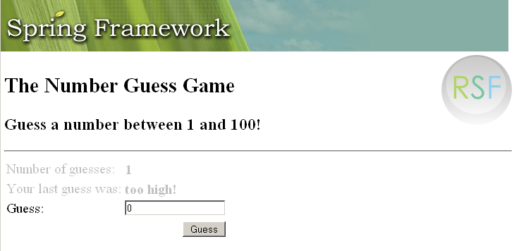

This demonstration app has become a standard sample in most frameworks, and therefore serves not only to demonstrate how to use RSF but also how it differs from other frameworks. It also saves me having to think of and code up another sample app...
In this case, the RSF version of the "Number Guessing Game" is taken directly from the corresponding example in Spring Web Flow, as representing the existing framework whose aims and philosophy are closest to RSF. You may well want to download the SWF distribution, containing this example, from SourceForge for comparison purposes. Where there are interesting differences between the RSF and SWF approaches these are commented in the code.
for comparison purposes. Where there are interesting differences between the RSF and SWF approaches these are commented in the code.
If you have got here from the HelloWorld app, you should know that the Number Guessing Game demonstrates, in addition to the basic RSF render functionality,
- The action cycle of RSF (handling HTTP POST)
- Propagation of state (from the request bean model) between one request and the next using flows
- Mapping out the transitions in a multi-request cycle (or "wizard") in a compact XML flow definition
- Basic RSF error handling and message targetting
- Definition of a component tree in an XML format.
This sample app is divided into two Maven projects, "base" holding the core application logic, and "webapp" holding the packaging for targetting to a standalone Servlet environment. However, for convenience these are packaged as a single Eclipse project which you can check out of SVN here. The main build for this project should be issued from the webapp directory - just type maven.
Note that while this app uses the XML style for defining component trees, this is largely for illustration and probably will not be what the majority of users will find convenient. The Java and XML ViewProducers are equivalent, and you can see an example of the Java style, which is appropriate for most developers, on the last page of the Hibernate Cookbook sample.
Once you have unpacked the "I-RSFNumberGuess" project into Eclipse, you will notice, in addition to the standard directory locations you already met in the Hello World sample, the following additional locations, all within the WEB-INF directory:
- a directory called "flows" containing XML representation of multi-request flows (in standard Spring Web Flow format)
- a directory called "messages" containing application messages in standard Java properties file format
- a directory called "producers" containing XML definitions of RSF components, one per view.
ImageHolder/new.jpg You can now try the NumberGuessing sample online at http://ponder.org.uk/RSFNumberGuess/faces/index. Note that unlike many other versions of this sample (especially JSF-based ones), the RSF version will behave correctly on multiple instantiations of the game with different browser windows. Most modern frameworks (RIFE, Struts Flow, and the original SpringWebFlow implementation from which our app is taken) get this right, however.
You can now try the NumberGuessing sample online at http://ponder.org.uk/RSFNumberGuess/faces/index. Note that unlike many other versions of this sample (especially JSF-based ones), the RSF version will behave correctly on multiple instantiations of the game with different browser windows. Most modern frameworks (RIFE, Struts Flow, and the original SpringWebFlow implementation from which our app is taken) get this right, however.
{kind=link}
If you have not experimented with an app like this before, playing a few rounds of the games now will make the following explanations a bit clearer. This app contains two parallel "games", a simple "higher and lower" guessing game, and a more complex 4-digit "Mastermind" game that will demonstrate RSF table rendering as it renders the complete history of guesses.
|  |
Head - Number Guessing
Page 1 - Simple XML components and flow definitions
Page 2 - Request scope bindings and error handling
Page 3 - Dynamic views and replicators
Add new attachment
List of attachments
| Kind | Attachment Name | Size | Version | Date Modified | Author | Change note |
|---|---|---|---|---|---|---|
png |
standalone-numberguess.png | 72.1 kB | 1 | 19-Jul-2006 09:36 | AntranigBasman |
{kind=link}
{kind=link}
Documentation
Developers
Javadocs
Designers
Sample RSF Apps
Presentations
Acronyms
Downloads
Current Release
Trunk
Distributions
Old Versions
Community
Q&A
Forums
Mailing Lists
Issue Tracker
People
Design
Roadmap
Integrations
Concepts
Philosophy